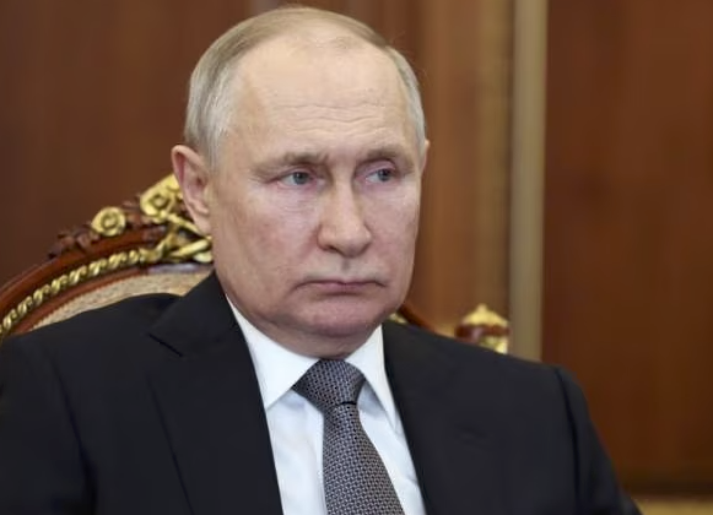

Vladimir Putin

Summary
I'm the president of Russia.I protect my country from all enemy, no matter the cost.
Education
- Bachelor of Law- Saint Petersburg State University
- Ph.D. in economics (Candidate of Economic Sciences) at the Saint Petersburg Mining University for a thesis on the strategic planning of the mineral economy.
Wark Experiance
Skilles
- Leadership:⭐⭐⭐⭐⭐
- Spying:⭐⭐⭐⭐⭐
- Strategy Planning:⭐⭐⭐
- Military expedition:⭐⭐⭐⭐⭐
- Communication:⭐⭐⭐⭐⭐
Awards and Certification
- 7 March 2001, Vietnam, Order of Ho Chi Minh
- 6 January 2004, Kazakhstan, Order of the Golden Eagle
- 22 September 2006, France, Légion d'honneur,Grand-Croix
- 6 October 2007, Tajikistan, Order of Ismoili Somoni
- 12 February 2007, Saudi Arabia, Order of Abdulaziz al Saud
- 10 September 2007, UAE, Order of Zayed
- 2 April 2010, Venezuela, Order of the Liberator
- 4 October 2013, Monaco, Order of Saint-Charles
- 11 July 2014, Cuba, Order of José Martí
- 16 October 2014, Serbia, Order of the Republic of Serbia
- 3 October 2017, Turkmenista, Order "For contribution to the development of cooperation"
- 22 November 2017, Kyrgyzstan, Order of Manas
- 8 June 2018, China, Order of Friendship
- 27 May 2019, Kazakhstan, Order of Nazarbayev
- 8 January 2023, Entity Republika Srpska, Order of the Republika Srpska
Other